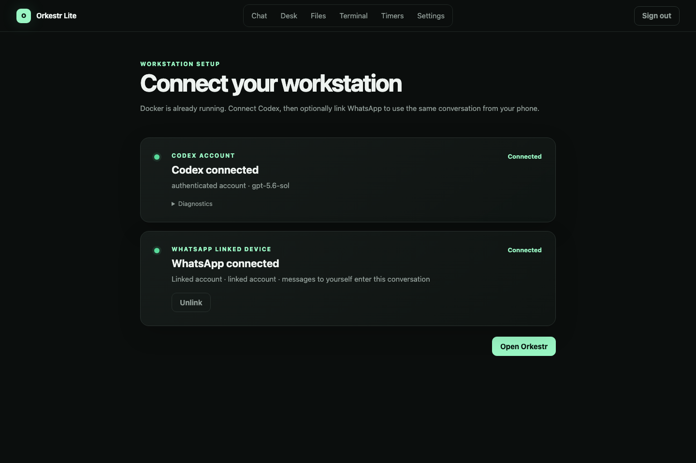

01 · Connect
Bring your own Codex account.
Docker is already running. Connect Codex, optionally link your own WhatsApp account, and open one private workstation. No second bot account and no public hosted agent are required.
